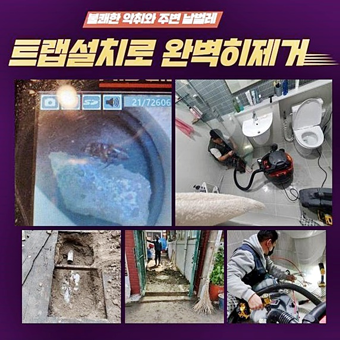
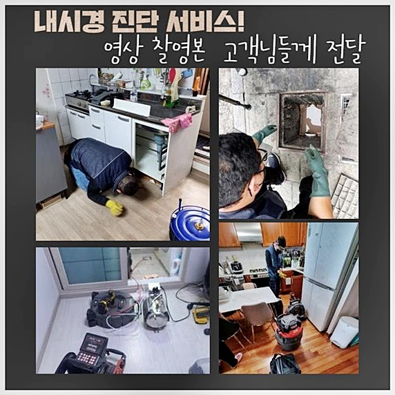
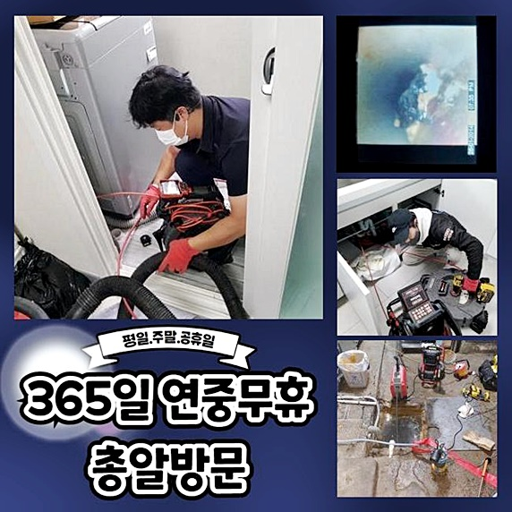
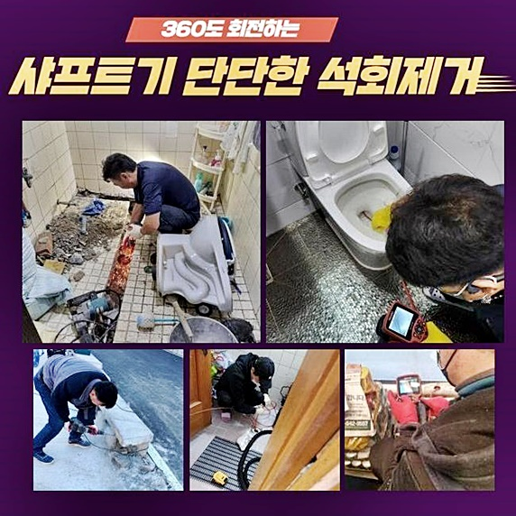
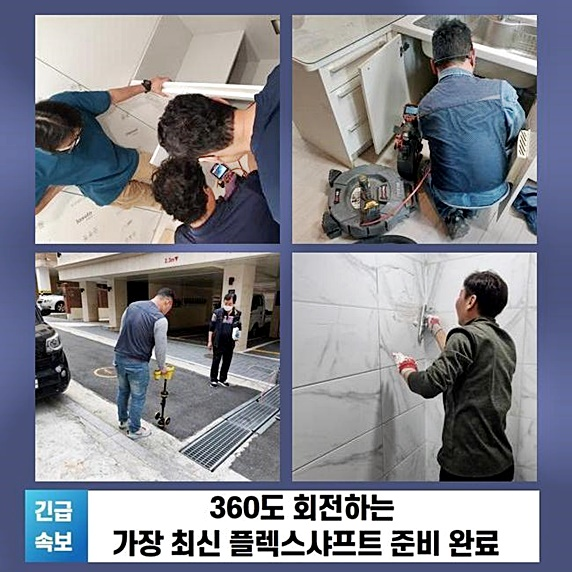
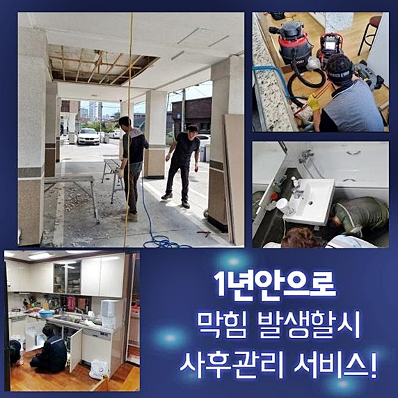
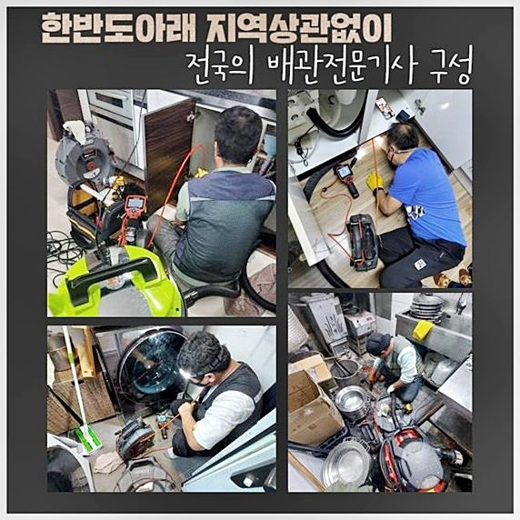

🏠 아산 법곡동하수도뚫음 남동 악취차단 설비출장
아산 법곡동 하수구막힘 전문 시공 후기

📋 작업 개요
- 위치: 아산 법곡동, 법곡동, 아산
- 서비스 유형: 하수구막힘, 배관막힘, 집수정막힘, 역류해결, 뚫는업체, 배관청소, 고압세척, 악취차단
- 작업 일시: 2024. 9. 10. 10:09
- 업체명: 하수구수사대 (010-5615-2118)
🔍 문제 상황
아산 법곡동하수도뚫음 남동 악취차단 설비출장
반갑습니다 조속히 방문드리는 저희업체의경우 출장비용에 대하여 받고있지않고 실패를했을때도 같이적용시켜 비용적인부분을 요구하지않아요
저희업체를 방문해주시는 여러분을위해 12개월동안 무상서비스를 제공하고있죠
막힘문제가 발생했을때 여러분들이라면 어떤방법을 통하여 처리하려고 하실까요
며칠전에 방문한 작업사례를 통하여 막힌배관을 뚫어내는방법을 알려드리려고하니 참고하신다면 도움될거라고 생각해요
수리난이도가 복잡하다고해서 타업체들은 해결하지않고 철수하기도해요
저희들은 꼼꼼하게 작업에착수해 해결하기위해 노력하고있어요
고객분의 요청시간에 맞추어서 내방또한 진행하고있죠
오늘현장도 문제없이 해결할수있었어요
방문전에는 간단한 막힘정도라고 예상했습니다
고객님께서 막힘상황을 사진으로찍어 보여주신걸로 내방전에 추측할수있었어요
방문하여 살펴보았더니 메인배관까지 문제가있는 좋지못한 상황이었죠
내외부하수구를 전체적으로 세밀하게 작업해서 해결할수있었죠

🔎 원인 분석
💡 전문가 진단: 정밀 진단 장비를 사용하여 슬러지의 고착 여부를 판명하고 타격/세척 작업을 실시했습니다.
두번째현장은 가정내에서 발생한 막힘문제였는데 고객분의 설명으로는 욕실배수구쪽 부근에서 배수상태가 느려지다가 하루지나서 들여다봤더니 역류까지하며 배수가되지 않았다고하셨어요
긴급한 마음으로 뚫는방법을 찾다가 셀프적인시도를 진행했다고 전해주셨어요
과도한 조치때문에 이물질과 오물들이 흘러넘치면서 악취현상까지 일어나면서 심각해진것이죠
이제는 손쓸수없다보니 배관업체를 찾아보다가 의뢰를주셨어요
역류문제는 대개 하수구속에서 오염물질이 진입하고 계속쌓이게되어 막히게되는 것입니다
막힘증세를 해결하기위해 전문기계들을 구비했습니다
먼저석션기로 하수구속에있는 각종오물을 빼내주는데요
위의과정을 우선으로 진행하지않으면 확실하게 해결될수가없죠
다음으로는 하수구내부의 굳은이물을 샤프트기계를 활용해서 제거하면됩니다
샤프트도구는 돌처럼굳어진 오염물을 분해시켜주는 기계입니다
작업할때 항시 요구되는 기기를 알려드릴게요
막힘증세가 발발된곳을 알아내기위해서는 하수구촬영 카메라장비가 있어야합니다
배관카메라기를 통해서 하수도깊은곳까지 살펴볼수있으므로 확실하게 막힌이유를 알아낼수있어요
배관cctv로 확인을하니 욕실쪽과연결된 배수관쪽에도 문제가있는걸 확인했는데요

🔧 작업 과정
밖으로이동해서 메인배관을 열어보았더니 이물이가득하여 흘러넘칠지경이었죠
막힘증세의 까닭이었으므로 이물세척과정을 진행하고자했죠
집수정입구에 가득차있는 물을흡입한뒤 배관내부작업에 착수하기로했어요
제거해보면 예상과는달리 양이많다보니 시간이걸릴수 있답니다
하지만 이 과정이 중요한 단계이니 다 빨아들일 수 있도록 했습니다
그제야입구가 보였으므로 하수관내부를 살펴볼수있도록 전동스프링장비를 통하여 통수를진행했어요
통수를해준뒤 고압청소과정을 진행하는데 강력한압을통해 오염물이 자리하고있는 위치에 물을쏘는것이죠
고압세척장비는 여러도구중 전문성이필요한 장비라고할수있죠
강력한압의 물을쏘기에 배관파손이 발현될수있기 때문입니다
고압세척작업이 마무리되면 각종이물이 싹없어져요
고착이물을 제거한뒤 필수과정으로 진행되는것은 석션장비로 잔여물을 빨아올리는 작업입니다
이렇게 모든계획을 마친후에는 깔끔해졌는지 내시경기계로 배관을 살펴보는데요
찌꺼기들이 남겨져 있었으므로 한번더제거하여 깔끔히 마무리해냈죠
원활한 배수상태로 돌아왔는지까지도 확인해드리고있어요
고객분과함께 물빠짐상태까지 확인한뒤에야 마치고있으니 걱정하지않으셔도 된답니다
막힘증세를 해결하지못하고 방치하실경우 2차적피해로 이어져서 물이새거나 물이솟구치는 증세까지 발발될수있으므로 막힘징조를 보일때 대처해보실것을 추천드려요
날카로운물건으로 하수구를쑤시는건 손상으로 이어질수있으므로 과도한조치는 삼가해주세요!
한번더 일러드리는것으로 혼자서 무리하게 작업하시면 되려문제를 악화시킬수있으니 미흡한대처는 삼가주세요
상가건물이거나 영업시설의경우 간헐적으로 점검해보는것이 예방을 하시는것이 좋은방법중 하나입니다
오늘설명드린 내용같이 정확히 해결해보고 싶으시다면 막힌원인에 대해서 알아낸뒤 대책을세우는게 중요하겠습니다
막힘문제에 대하여 알아서 해결되겠거니 하며 놔두지말고 저희에게 맡겨주세요!


✅ 작업 완료
전문가를 호출할때 고려해야할 사항이있는데 설명드려보면 전문기계를 다양히 구비했는지와 수리비용에 대해서 작업하기전에 알려주는지 체크해야해요
저희들의경우 현장에내방해서 꼼꼼하게 문제파악후 비용에관해 알려드리고 고객께서 동의해야지만 착수하고있으니 안심해주세요
한시간안으로 내방이가능할뿐 아니라 작업과정에있어 분명히 보여드리기에 우려마시길 바래요
저희업체로 의뢰주시면 믿음에 보답하게끔 성심성의껏작업해 뚫어내는결실로 보여드리도록 하겠습니다
이밖으로도 궁금한부분이 있으실경우 편하실때 아무때나 전화주셔서 여쭈시면 세세하게 응대해드릴게요
이번시간에 포스팅한 내용이 도움되었을거라 생각하며 이만 마치도록할게요! 감사합니다!




⚠️ 하수구 배관 막힘 예방 및 관리 가이드
- ✅ 머리카락, 비닐, 물티슈 등 물에 분해되지 않는 이물질은 하수구 유입을 절대 금지해 주세요.
- ✅ 하수구 거름망을 씌우고 모여진 이물질은 주기적으로 쓰레기통에 바로 비워주셔야 합니다.
- ✅ 배관 노후가 심할 경우 이물질이 더 쉽게 걸리므로 주기적인 배관 세척(고압세척 등)을 권장합니다.
- ✅ 작업 후 1년 이내 재발 시 하수구수사대에서 무상 A/S 보증 서비스를 제공합니다.
💡 핵심 정리
- 확실한 장비 작업(내시경 점검 및 샤프트 스케일링)으로 원인을 뿌리 뽑습니다.
- 작업 후 1년 이내에 동일한 부위 재발 시 100% 무상 A/S 서비스를 보장합니다.
- 서울 · 경기 · 인천 전 지역에 24시간 언제든 긴급 출동할 수 있도록 항시 대기 중입니다.
❓ 자주 묻는 질문 (FAQ)
🚨 아산 법곡동 하수구막힘 문제로 고민이신가요?
정확한 원인 진단과 확실한 시공으로 재발 없는 해결을 약속드립니다.
24시간 긴급 출동 | 서울 · 경기 · 인천 전지역 | 1년 내 재발 시 무상 A/S